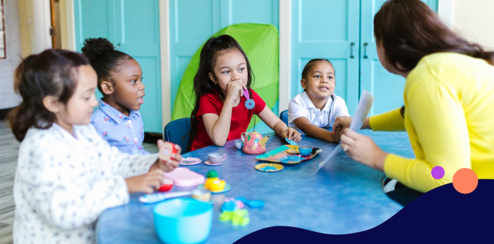
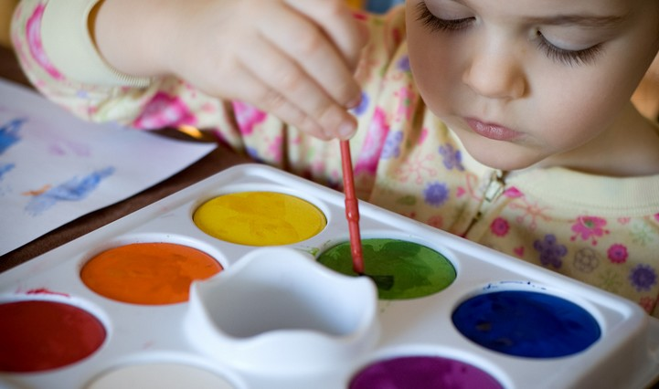

About Us

Welcome to TodHQ! Our website is a search engine dedicated to providing information about daycares that are family-owned and run within a house. We understand the importance of finding a safe and nurturing environment for your little ones, and our mission is to connect parents with trusted family-run daycares in their community.
Why Choose Family-Run Daycares?
Family-run daycares offer a more personalized touch, ensuring that every child gets the attention they deserve. Unlike larger institutions, these home-based daycares provide a warm and cozy environment, closely mirroring the comfort of one's own home.

Our Quality Standards
At TodHQ, quality is paramount. We meticulously vet each daycare listing, ensuring they meet our high standards for safety, care, and learning. Additionally, our community of parents often share reviews and experiences, providing an added layer of trust and transparency.
Diverse Learning Opportunities
Beyond safety and comfort, we believe in the power of learning. Many of our listed daycares offer diverse learning programs, from arts and crafts to foundational math and reading skills. Encouraging holistic development is at the heart of what we do.
